Linda Chasserieau
De la créa à la tech
C'est durant mon expérience de Responsable Communication au sein d'un club de basket en première division, alors que la gestion du site web de l'équipe faisait partie de mes missions, que j'ai pris la pleine mesure de la puissance de cet outil. Consciente des enjeux et des possibilités offertes par ue application web mais incapable de mettre en oeuvre les idées que j'avais en tête en terme de fonctionnalités et de fan experience, j'ai décidé que tôt ou tard, je me formerai.
De cette frustration est né un appétit croissant pour les technos web. La formation au Titre RNCP de développeur Web a été l'occasion d'ouvrir les perspectives.
Si je reste uen créative dans l'âme, c'est désormais à la recherche de solutions techniques que j'attelle mon énergie chaque jour, avec une envie constante de développer mes connaissances.
Mes convictions personnelles me poussent dans une démarche de recherche de qualité dans mon code tendant vers les principes de l'ecoconception
.png)
.png)
.png)


 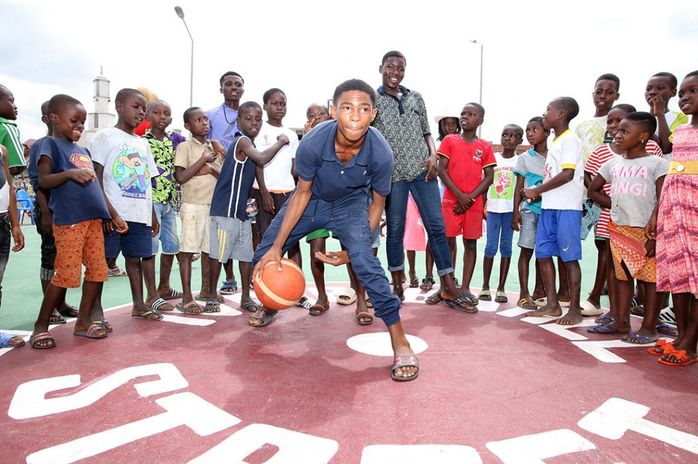
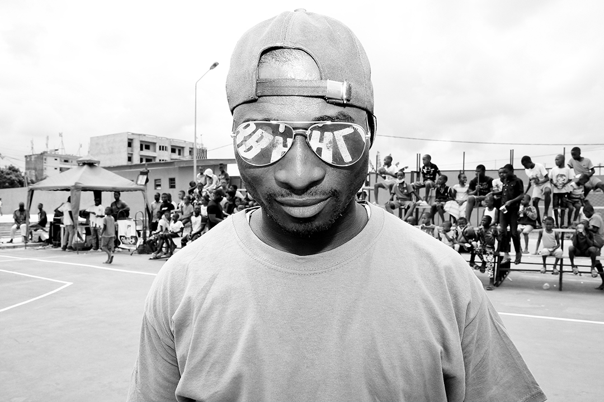
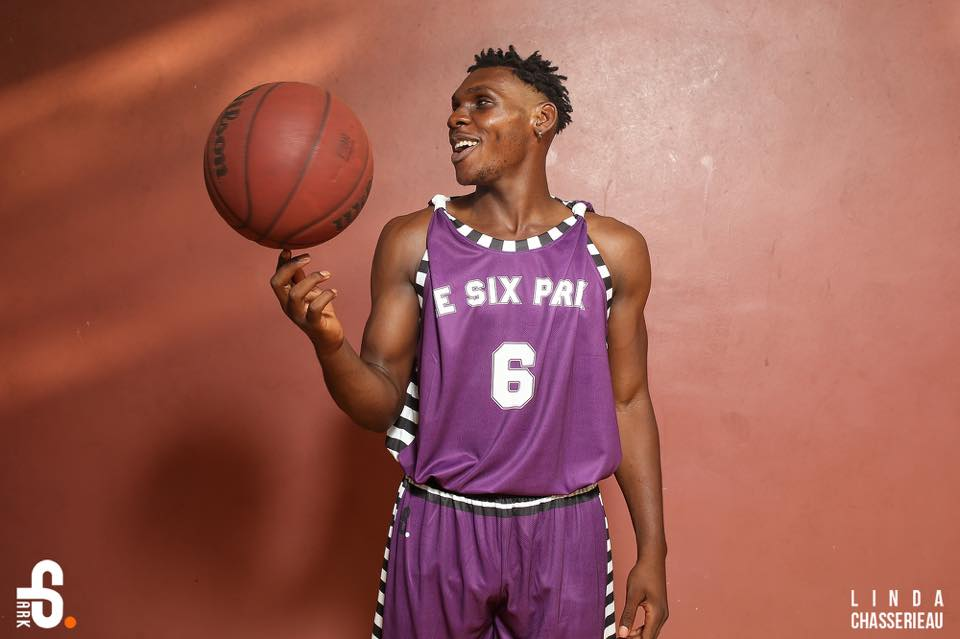
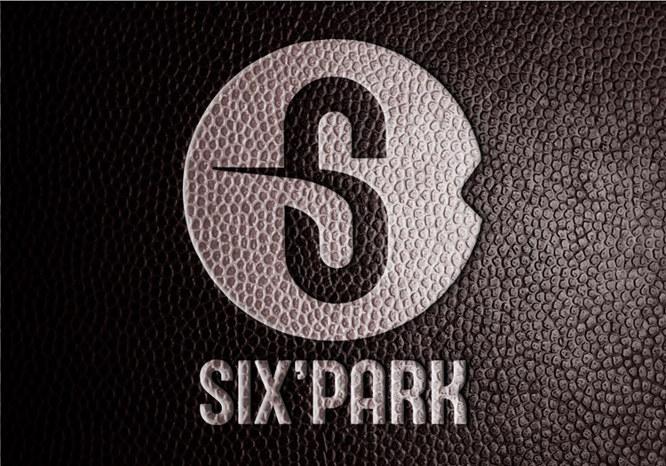
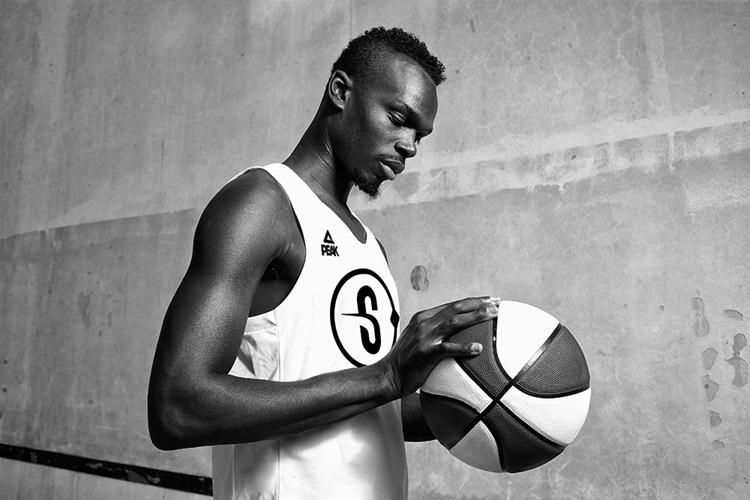
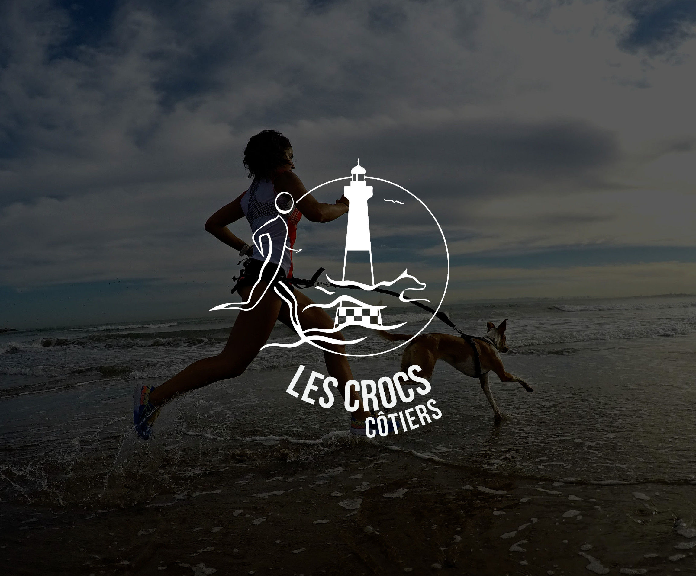
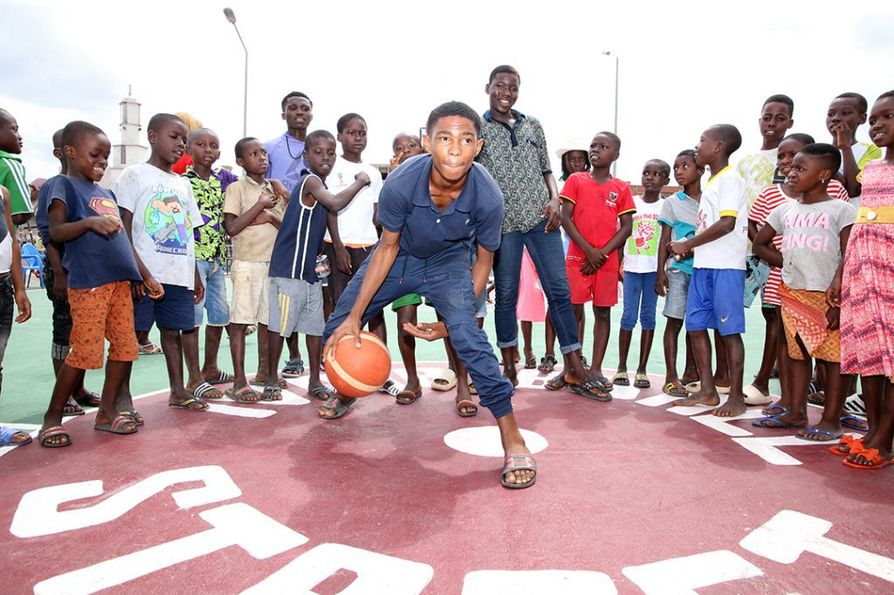
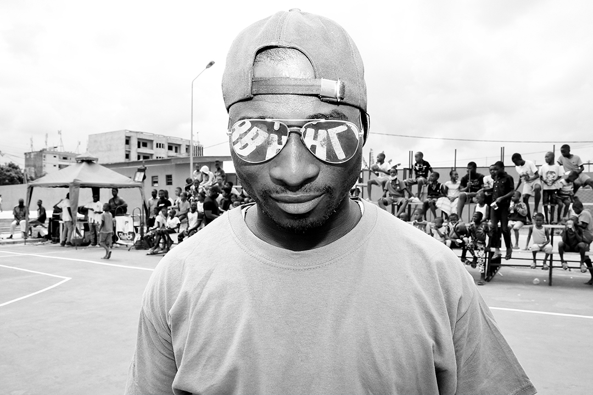
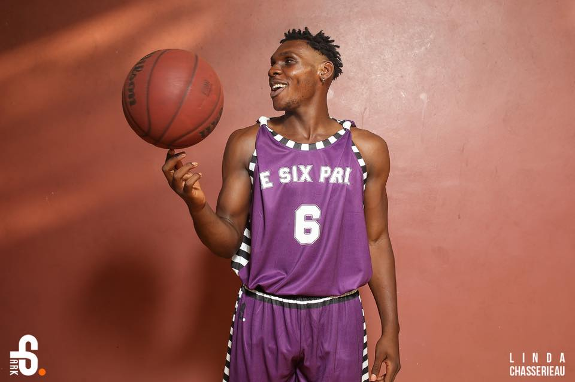
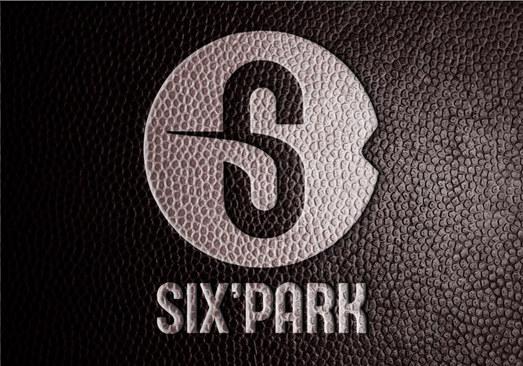
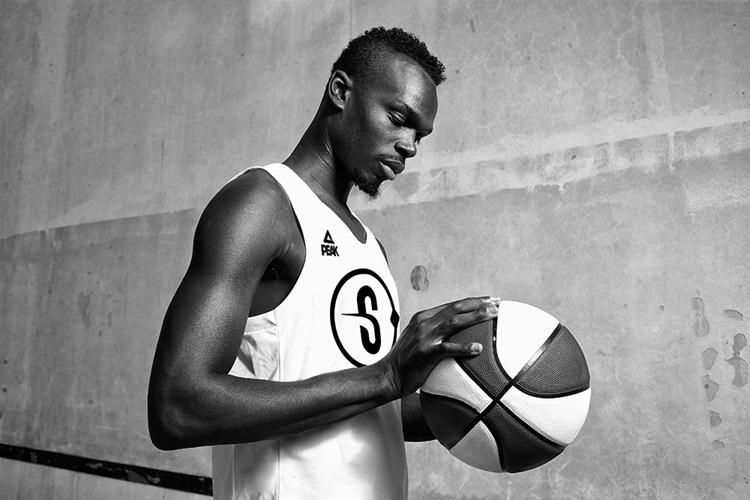
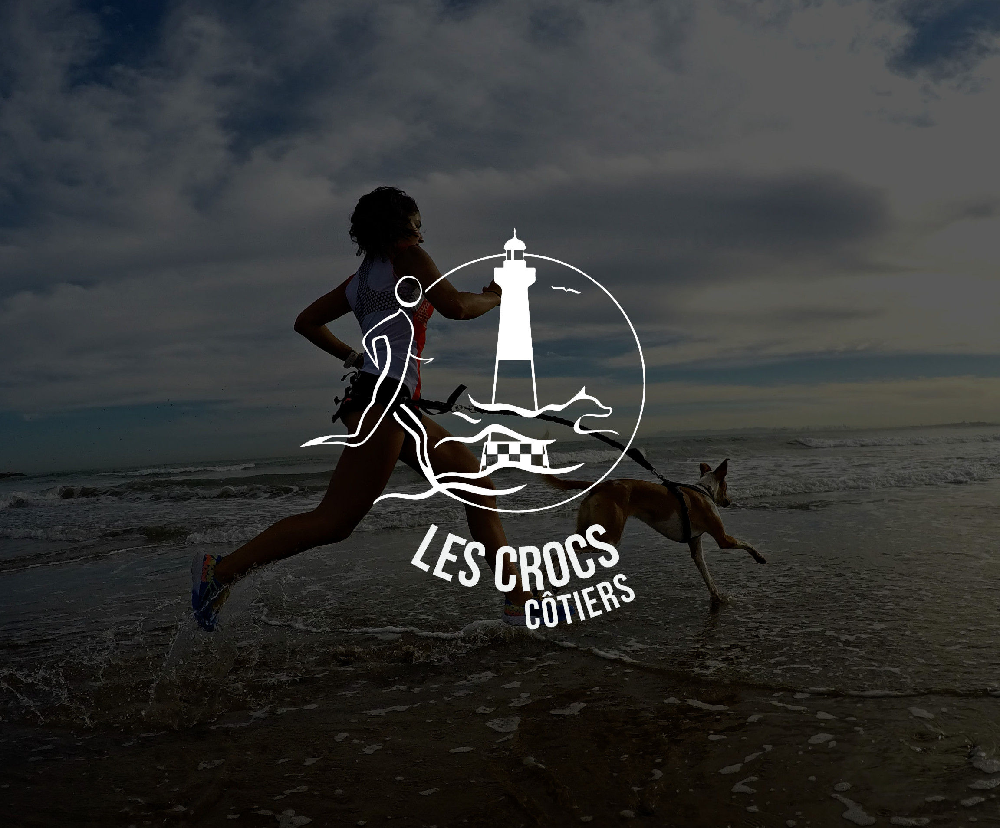